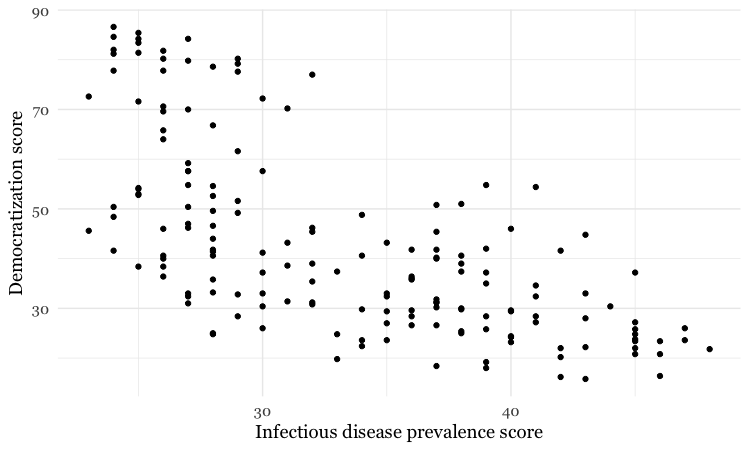
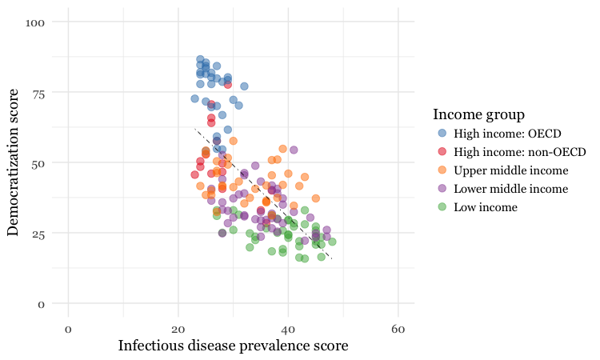
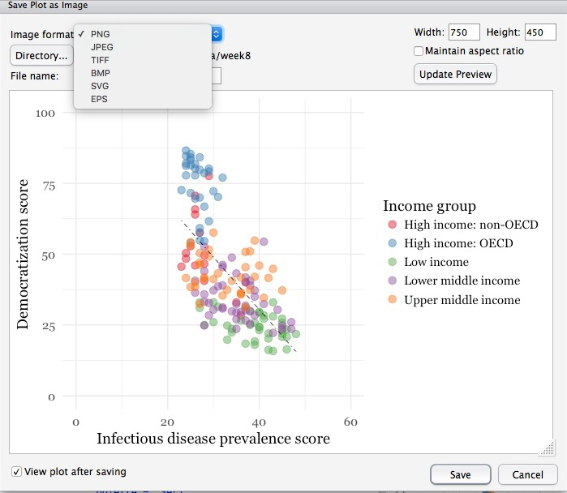
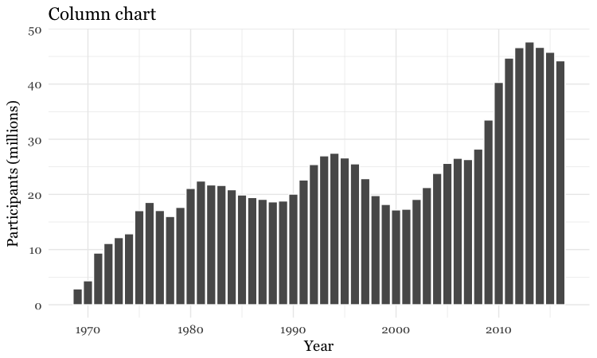
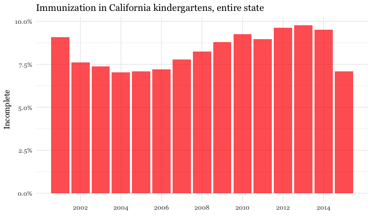
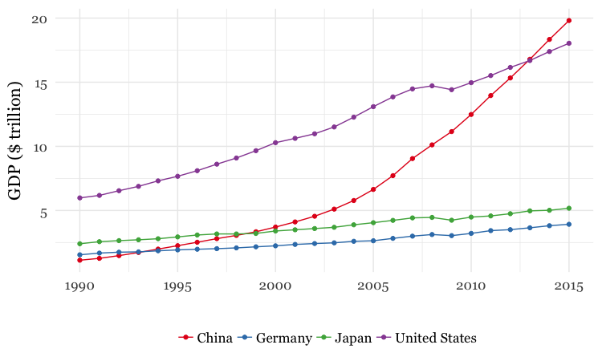

Data analysis with R
Introducing R and RStudio
In today’s class we will analyze data using R, which is a very powerful tool, designed by statisticians for data analysis. Described on its website as “free software environment for statistical computing and graphics,” R is a programming language that opens a world of possibilities for making graphics and analyzing and processing data. Indeed, just about anything you may want to do with data can be done with R, from web scraping to making interactive graphics.
Our goal is to get used to working with data in R. In particular, we will learn how to run SQL-like analysis in R using the dplyr package.
We will also make some graphics with R using the ggplot2 package.
RStudio is an “integrated development environment,” or IDE, for R that provides a user-friendly interface.
Launch RStudio, and the screen should look like this:
The main panel to the left is the R Console. Type valid R code into here, hit return, and it will be run. See what happens if you run:
print("Hello World!")
Software installation
Download R for your operating system by following the links from here. On the Mac, you need to download and install R-3.4.2.pkg.
Download the latest free version of RStudio Desktop from here.
Mac users may also to alter their Mac security preferences to allow apps authored by developers that are not part of Apple’s ecosystem. Open System Preferences>Security & Privacy, select the General tab and click the lock icon at bottom left to make changes, then allow apps downloaded from Anywhere:

The data we will use today
Download the data for this session from here, unzip the folder and place it on your desktop. It contains the following files, the first two used in reporting this story, which revealed that some of the doctors paid as “experts” by the drug company Pfizer had troubling disciplinary records:
pfizer.csvPayments made by Pfizer to doctors across the United States in the second half on 2009. Contains the following variables:org_indivFull name of the doctor, or their organization.first_plusDoctor’s first and middle names.first_namelast_name. First and last names.citystateCity and state.category of paymentType of payment, which includeExpert-led Forums, in which doctors lecture their peers on using Pfizer’s drugs, and `Professional Advising.cashValue of payments made in cash.otherValue of payments made in-kind, for example puschase of meals.totalvalue of payment, whether cash or in-kind.
fda.csvData on warning letters sent to doctors by the U.S. Food and Drug Administration, because of problems in the way in which they ran clinical trials testing experimental treatments. Contains the following variables:name_lastname_firstname_middleDoctor’s last, first, and middle names.issuedDate letter was sent.officeOffice within the FDA that sent the letter.
disease_democ.csvData illustrating a controversial theory suggesting that the emergence of democratic political systems has depended largely on nations having low rates of infectious disease, from the Global Infectious Diseases and Epidemiology Network and Democratization: A Comparative Analysis of 170 Countries.food_stamps.csvU.S. Department of Agriculture data on the number ofparticipants, in millions, andcosts, in $ billions, of the federal Supplemental Nutrition Assistance Program from 1969 to 2016.kindergarten.csvData from the California Department of Public Health, documenting enrollment and the number of children with complete immunizations at entry into kindergartens in California from 2001 to 2015. Contains the following variables:districtSchool district.sch_codeUnique identifying code for each school.pub_privWhether school is public or private.schoolSchool name.enrollmentNumber of children enrolled.completeNumber of children with complete immunizations.start_yearYear of entry (for the 2015-2016 school year, for example, this would be 2015).
nations.csvData from the World Bank Indicators portal, which is an incredibly rich resource. Contains the following variables, from 1990 onwards:iso2ciso3cTwo- and Three-letter codes for each country, assigned by the International Organization for Standardization.countryCountry name.yearpopulationEstimated total population at mid-year, including all residents apart from refugees.gdp_percapGross Domestic Product per capita in current international dollars, corrected for purchasing power in different territories.life_expectLife expectancy at birth, in years.populationEstimated total population at mid-year, including all residents apart from refugees.birth_rateLive births during the year per 1,000 people, based on mid-year population estimate.neonat_mortal_rateNeonatal mortality rate: babies dying before reaching 28 days of age, per 1,000 live births in a given year.regionincomeWorld Bank regions and income groups, explained here.
Reproducibility: Save your scripts
Data journalism should ideally be fully documented and reproducible. R makes this easy, as every operation performed can be saved in a script, and repeated by running that script. Click on the  icon at top left and select
icon at top left and select R Script. A new panel should now open:

Any code we type in here can be run in the console. Hitting Run will run the line of code on which the cursor is sitting. To run multiple lines of code, highlight them and click Run.
Click on the save/disk icon in the script panel and save the blank script to the file on your desktop with the data for this workshop, calling it wcsj.R.
Set your working directory
Now we can set the working directory to this folder by selecting from the top menu Session>Set Working Directory>To Source File Location. (Doing so means we can load the files in this directory without having to refer to the full path for their location, and anything we save will be written to this folder.)
Notice how this code appears in the console:
setwd("~/Desktop/wcsj-data")
Save your data
The panel at top right has two tabs, the first showing the Environment, or all of the “objects” loaded into memory for this R session. We can save this as well, so we don’t have to load and process data again if we return to return to a project later.
(The second tab shows the History of the operations you have performed in RStudio.)
Click on the save/disk icon in the Environment panel to save and call the file wcsj.RData. You should see the following code appear in the Console:
save.image("~/Desktop/wcsj-data/wcsj.RData")
Copy this code into your script, placing it at the end, with a comment, explaining what it does:
# save session data
save.image("~/Desktop/wcsj-data/wcsj.RData")
Comment your code
Anything that appears on a line after # will be treated as a comment, and will be ignored when the code is run. Get into the habit of commenting your code: Don’t trust yourself to remember what it does!
Some R code basics
<-is known as an “assignment operator.” It means: “Make the object named to the left equal to the output of the code to the right.”&means AND, in Boolean logic.|means OR, in Boolean logic.!means NOT, in Boolean logic.- When referring to values entered as text, or to dates, put them in quote marks, like this:
"United States", or"2016-07-26". Numbers are not quoted. - When entering two or more values as a list, combine them using the function
c, with the values separated by commas, for example:c("2017-07-26","2017-08-04") - As in a spreadsheet, you can specify a range of values with a colon, for example:
c(1:10)creates a list of integers (whole numbers) from one to ten. Some common operators:
+-add, subtract.*/multiply, divide.><greater than, less than.>=<=greater than or equal to, less than or equal to.!=not equal to.
Handling null values:
- Nulls are designated as
NA. is.na(x)looks for nulls within variablex.!is.na(x)looks for non-null values within variablex.
- Nulls are designated as
Functions:
-candis.naare functions. Functions are followed by parentheses, and act on the code in the parentheses.Equals signs can be a little confusing, but see how they are used in the code we use today:
==test whether an object is equal to a value. This is often used when filtering data, as we will see.=make an object equal to a value; works like<-, but used within the brackets of a function.
Important: Object and variable names in R should not contain spaces.
Install and load R packages
Much of the power of R comes from the thousands of “packages” written by its community of open source contributors. These are optimized for specific statistical, graphical or data-processing tasks. To see what packages are available in the basic distribution of R, select the Packages tab in the panel at bottom right. To find packages for particular tasks, try searching Google using appropriate keywords and the phrase “R package.”
In this class, we will work with two incredibly useful packages developed by Hadley Wickham, chief scientist at RStudio:
- readr For reading and writes CSV and other text files.
- dplyr For processing and analyzing data.
- ggplot2 For making graphics.
These and several other useful packages have been combined into a super-package called tidyverse.
To install a package, click on the Install icon in the Packages tab, type its name into the dialog box, and make sure that Install dependencies is checked, as some packages will only run correctly if other packages are also installed. Click Install and all of the required packages should install:
Notice that the following code appears in the console:
install.packages("tidyverse")
So you can also install packages with code in this format, without using the point-and-click interface.
Each time you start R, it’s a good idea to click on Update in the Packages panel to update all your installed packages to the latest versions.
Installing a package makes it available to you, but to use it in any R session you need to load it. You can do this by checking its box in the Packages tab. However, we will enter the following code into our script, then highlight these lines of code and run them:
# load required packages
library(readr)
library(dplyr)
library(ggplot2)
At this point, and at regular intervals, save your script, by clicking the save/disk icon in the script panel, or using the ⌘-S keyboard shortcut.
Load and view data
Load data
You can load data into the current R session by selecting Import Dataset>From Text File... in the Environment tab.
However, we will use the read_csv function from the readr package. Copy the following code into your script and Run:
# load data of pfizer payments to doctors and warning letters sent by food and drug adminstration
pfizer <- read_csv("pfizer.csv")
fda <- read_csv("fda.csv")
Notice that the Environment now contains two objects, of the type tbl_df, a variety of the standard R object for holding tables of data, known as a data frame:
The Value for each data frame details the number of columns, and the number of rows, or observations, in the data.
You can remove any object from your environment by checking it in the Grid view and clicking the broom icon.
Examine the data
We can View data at any time by clicking on its table icon in the Environment tab in the Grid view.
Here, for example, I am looking at the pfizer view:
The str function will tell you more about the columns in your data, including their data type. Copy this code into your script and Run:
# view structure of data
str(pfizer)
This should give the following output in the R Console:
Classes ‘tbl_df’, ‘tbl’ and 'data.frame': 10087 obs. of 10 variables:
$ org_indiv : chr "3-D MEDICAL SERVICES LLC" "AA DOCTORS, INC." "ABBO, LILIAN MARGARITA" "ABBO, LILIAN MARGARITA" ...
$ first_plus: chr "STEVEN BRUCE" "AAKASH MOHAN" "LILIAN MARGARITA" "LILIAN MARGARITA" ...
$ first_name: chr "STEVEN" "AAKASH" "LILIAN" "LILIAN" ...
$ last_name : chr "DEITELZWEIG" "AHUJA" "ABBO" "ABBO" ...
$ city : chr "NEW ORLEANS" "PASO ROBLES" "MIAMI" "MIAMI" ...
$ state : chr "LA" "CA" "FL" "FL" ...
$ category : chr "Professional Advising" "Expert-Led Forums" "Business Related Travel" "Meals" ...
$ cash : int 2625 1000 0 0 1800 750 0 825 3000 0 ...
$ other : int 0 0 448 119 0 0 47 0 0 396 ...
$ total : int 2625 1000 448 119 1800 750 47 825 3000 396 ...
chr means “character,” or a string of text (which can be treated as a categorical variable); int means an integer, or whole number.
Also examine the structure of the fda data frame using the following code:
str(fda)
This should be the console output:
Classes ‘tbl_df’, ‘tbl’ and 'data.frame': 272 obs. of 5 variables:
$ name_last : chr "ADELGLASS" "ADKINSON" "ALLEN" "AMSTERDAM" ...
$ name_first : chr "JEFFREY" "N." "MARK" "DANIEL" ...
$ name_middle: chr "M." "FRANKLIN" "S." NA ...
$ issued : Date, format: "1999-05-25" ...
$ office : chr "Center for Drug Evaluation and Research" "Center for Biologics Evaluation and Research" "Center for Devices and Radiological Health" "Center for Biologics Evaluation and Research" ...
Notice that issued has been recognized as a Date variable. Other common data types include num, for numbers that may contain decimals and POSIXct for full date and time.
If you run into any trouble importing data with readr, you may need to specify the data types for some columns — in particular for date and time. This link explains how to set data types for individual variables when importing data with readr.
To specify an individual column use the name of the data frame and the column name, separated by $. Type this into your script and run:
# print values for total in pfizer data
pfizer$total
The output will be the first 1,000 values for that column.
If you need to change the data type for any column, use the following functions:
as.characterconverts to a text string.as.numericconverts to a number.as.factorconverts to a categorical variable.as.integerconverts to an integeras.Dateconverts to a dateas.POSIXctconverts to a full date and time.
Now add the following code to your script to convert the convert total in the pfizer data to a numeric variable (which would allow it to hold decimal values, if we had any).
# convert total to numeric variable
pfizer$total <- as.numeric(pfizer$total)
str(pfizer)
Notice that the data type for total has now changed:
Classes ‘tbl_df’, ‘tbl’ and 'data.frame': 10087 obs. of 10 variables:
$ org_indiv : chr "3-D MEDICAL SERVICES LLC" "AA DOCTORS, INC." "ABBO, LILIAN MARGARITA" "ABBO, LILIAN MARGARITA" ...
$ first_plus: chr "STEVEN BRUCE" "AAKASH MOHAN" "LILIAN MARGARITA" "LILIAN MARGARITA" ...
$ first_name: chr "STEVEN" "AAKASH" "LILIAN" "LILIAN" ...
$ last_name : chr "DEITELZWEIG" "AHUJA" "ABBO" "ABBO" ...
$ city : chr "NEW ORLEANS" "PASO ROBLES" "MIAMI" "MIAMI" ...
$ state : chr "LA" "CA" "FL" "FL" ...
$ category : chr "Professional Advising" "Expert-Led Forums" "Business Related Travel" "Meals" ...
$ cash : int 2625 1000 0 0 1800 750 0 825 3000 0 ...
$ other : int 0 0 448 119 0 0 47 0 0 396 ...
$ total : num 2625 1000 448 119 1800 ...
The summary function will run a quick statistical summary of a data frame, calculating mean, median and quartile values for continuous variables:
# summary of pfizer data
summary(pfizer)
Here is the last part of the console output:
total
Min. : 0
1st Qu.: 191
Median : 750
Mean : 3507
3rd Qu.: 2000
Max. :1185466
Process and analyze data
Now we will use dplyr to process the data, using these basic operations:
Sort: Largest to smallest, oldest to newest, alphabetical etc.
Filter: Select a defined subset of the data.
Summarize/Aggregate: Deriving one value from a series of other values to produce a summary statistic. Examples include: count, sum, mean, median, maximum, minimum etc. Often you’ll group data into categories first, and then aggregate by group.
Join: Merging entries from two or more datasets based on common field(s), e.g. unique ID number, last name and first name.
Here are some of the most useful functions in dplyr:
selectChoose which columns to include.filterFilter the data.arrangeSort the data, by size for continuous variables, by date, or alphabetically.group_byGroup the data by a categorical variable.summarizeSummarize, or aggregate (for each group if followinggroup_by). Often used in conjunction with functions including:mean(x)Calculate the mean, or average, for variablex.median(x)Calculate the median.max(x)Find the maximum value.min(x)Find the minimum value.sum(x)Add all the values together.n()Count the number of records. Here there isn’t a variable in the parentheses of the function, because the number of records applies to all variables.n_distinct(x)Count the number of unique values in variablex.
mutateCreate new column(s) in the data, or change existing column(s).renameRename column(s).bind_rowsAppend one data frames to another, combining data from columns with the same name.
There are also various functions to join data, which we will explore below.
All of these functions can be chained together using the “pipe” operator %>% which makes the output of one line of code the input for the next. This allows you to run through a series of operations in logical order. I find it helpful to think of %>% as “then.”
Filter and sort data
Now we will filter and sort the data in specific ways. For each of the following examples, copy the code that follows into your script, and view the results. Notice how we create a new objects to hold the processed data.
Find doctors in California paid $10,000 or more by Pfizer to run “Expert-Led Forums.”
# doctors in California who were paid $10,000 or more by Pfizer to run “Expert-Led Forums.”
ca_expert_10000 <- pfizer %>%
filter(state == "CA" & total >= 10000 & category == "Expert-Led Forums")
Notice the use of == to find values that match the specified text, >= for greater than or equal to, and the Boolean operator &. When referring to text values, they should be put inside quote marks, like this:"CA".
Now add a sort to the end of the code to list the doctors in descending order by the payments received:
# doctors in California who were paid $10,000 or more by Pfizer to run “Expert-Led Forums.”
ca_expert_10000 <- pfizer %>%
filter(state == "CA" & total >= 10000 & category == "Expert-Led Forums") %>%
arrange(desc(total))
If you arrange without the desc function, the sort will be from smallest to largest.
Find doctors in California or New York who were paid $10,000 or more by Pfizer to run “Expert-Led Forums.”
# doctors in California *or* New York who were paid $10,000 or more by Pfizer to run “Expert-Led Forums.
ca_ny_expert_10000 <- pfizer %>%
filter((state == "CA" | state == "NY") & total >= 10000 & category == "Expert-Led Forums") %>%
arrange(desc(total))
Notice the use of the | Boolean operator, and the brackets around that part of the query. This ensures that this part of the query is run first. See what happens if you exclude them.
Find doctors in states other than California who were paid $10,000 or more by Pfizer to run “Expert-Led Forums.”
# doctors in states *other than* California who were paid $10,000 or more by Pfizer to run “Expert-Led Forums.
not_ca_expert_10000 <- pfizer %>%
filter(state != "CA" & total >= 10000 & category=="Expert-Led Forums") %>%
arrange(desc(total))
Notice the use of the != operator to exclude doctors in California.
Find the 20 doctors across the four largest states (CA, TX, FL, NY) who were paid the most for professional advice.
# 20 doctors across the four largest states (CA, TX, FL, NY) who were paid the most for professional advice.
ca_ny_tx_fl_prof_top20 <- pfizer %>%
filter((state=="CA" | state == "NY" | state == "TX" | state == "FL") & category == "Professional Advising") %>%
arrange(desc(total)) %>%
head(20)
Notice the use of head, which grabs a defined number of rows from the start of a data frame. Here, it is crucial to run the sort first! See what happens if you change the order of the last two lines.
Filter the data for all payments for running Expert-Led Forums or for Professional Advising, and arrange alphabetically by doctor (last name, then first name)
# Filter the data for all payments for running Expert-Led Forums or for Professional Advising, and arrange alphabetically by doctor (last name, then first name)
expert_advice <- pfizer %>%
filter(category == "Expert-Led Forums" | category == "Professional Advising") %>%
arrange(last_name, first_name)
Notice that you can sort by multiple variables, separated by commas.
Use pattern matching to filter text
The following code uses the grepl function to find values containing a particular string of text. This can simplify the code used to filter based on text.
# use pattern matching to filter text
expert_advice <- pfizer %>%
filter(grepl("Expert|Professional", category)) %>%
arrange(last_name, first_name)
not_expert_advice <- pfizer %>%
filter(!grepl("Expert|Professional", category)) %>%
arrange(last_name, first_name)
This code differs only by the ! Boolean operator. Notice that it has split the data into two, based on categories of payment.
Append one data frame to another
The following code uses the bind_rows function to append one data frame to another, here recreating the unfiltered data from the two data frames above.
# merge/append data frames
pfizer2 <- bind_rows(expert_advice, not_expert_advice)
The new data frame pfizer2 contains the same data as the original pfizer, although the order of the records will be different.
Write data to a CSV file
readr can write data to CSV and other text files.
# write expert_advice data to a csv file
write_csv(expert_advice, "expert_advice.csv", na="")
When you run this code, a CSV file with the data should be saved in your wcsj-data folder. na="" ensures that any empty cells in the data frame are saved as blanks — R represents null values as NA, so if you don’t include this, any null values will appear as NA in the saved file.
Group and summarize data
Calculate the total payments, by state
# calculate total payments by state
state_sum <- pfizer %>%
group_by(state) %>%
summarize(sum = sum(total)) %>%
arrange(desc(sum))
Notice the use of group_by followed by summarize to group and summarize data, here using the function sum.
Calculate some additional summary statistics, by state
# As above, but for each state also calculate the median payment, and the number of payments
state_summary <- pfizer %>%
group_by(state) %>%
summarize(sum = sum(total), median = median(total), count = n()) %>%
arrange(desc(sum))
Notice the use of multiple summary functions, sum, median, and n. (You don’t specify a variable for n because it is simply counting the number of rows in the data.)
Group and summarize for multiple categories
# as above, but group by state and category
state_category_summary <- pfizer %>%
group_by(state, category) %>%
summarize(sum = sum(total), median = median(total), count = n()) %>%
arrange(state, category)
As for arrange, you can group_by by multiple variables, separated by commas.
Working with dates
Now let’s run see how to work with dates, using the FDA warning letters data.
Filter the data for letters sent from the start of 2005 onwards
# FDA warning letters sent from the start of 2005 onwards
post2005 <- fda %>%
filter(issued >= "2005-01-01") %>%
arrange(issued)
Notice that operators like >= can be used for dates, as well as for numbers.
Count the number of letters issued by year
# count the letters by year
letters_year <- fda %>%
mutate(year = format(issued, "%Y")) %>%
group_by(year) %>%
summarize(letters=n())
This code introduces dplyr’s mutate function to create a new column in the data. The new variable year is the four-digit year "%Y (see here for more on time and date formats in R), extracted from the issued dates using the format function. Then the code groups by year and counts the number of letters for each one.
Add columns giving the number of days and weeks that have elapsed since each letter was sent
# add new columns showing many days and weeks elapsed since each letter was sent
fda <- fda %>%
mutate(days_elapsed = Sys.Date() - issued,
weeks_elapsed = difftime(Sys.Date(), issued, units = "weeks"))
Notice in the first line that this code changes the fda data frame, rather than creating a new object. The function Sys.Date returns the current date, and if you subtract another date, it will calculate the difference in days. To calculate date and time differences using other units, use the difftime function.
Notice also that you can mutate multiple columns at one go, separated by commas.
Join data from two data frames
There are also a number of join functions in dplyr to combine data from two data frames. Here are the most useful:
inner_join()returns values from both tables only where there is a match.left_join()returns all the values from the first-mentioned table, plus those from the second table that match.semi_join()filters the first-mentioned table to include only values that have matches in the second table.anti_join()filters the first-mentioned table to include only values that have no matches in the second table.
To illustrate, these joins will find doctors paid by Pfizer to run expert led forums who had also received a warning letter from the FDA:
# join to identify doctors paid to run Expert-led forums who also received a warning letter
expert_warned_inner <- inner_join(pfizer, fda, by=c("first_name" = "name_first", "last_name" = "name_last")) %>%
filter(category=="Expert-Led Forums")
expert_warned_semi <- semi_join(pfizer, fda, by=c("first_name" = "name_first", "last_name" = "name_last")) %>%
filter(category=="Expert-Led Forums")
The code in by=c() defines how the join should be made. If instructions on how to join the tables are not supplied, dplyr will look for columns with matching names, and perform the join based on those.
The difference between the two joins above is that the first contains all of the columns from both data frames, while the second gives only columns from the pfizer data frame.
In practice, you may wish to inner_join and then use dplyr’s select function to select the columns that you want to retain, for example:
# as above, but select desired columns from data
expert_warned <- inner_join(pfizer, fda, by=c("first_name" = "name_first", "last_name" = "name_last")) %>%
filter(category=="Expert-Led Forums") %>%
select(first_plus, last_name, city, state, total, issued)
expert_warned <- inner_join(pfizer, fda, by=c("first_name" = "name_first", "last_name" = "name_last")) %>%
filter(category=="Expert-Led Forums") %>%
select(2:5,10,12)
Notice that you can select by columns’ names, or by their positions, where 1 is the first column, 3 is the third, and so on.
Here is a useful reference for managing joins with dplyr.
Making graphics with R
Now we will begin to explore how R can be used to make graphics from data, making customized static graphics with the ggplot2 package.
Introducing ggplot2 and the grammar of graphics
The “gg” in ggplot2 stands for “grammar of graphics,” an approach to drawing charts devised by the statistician Leland Wilkinson. Rather than thinking in terms of finished charts like a scatter plot or a column chart, it starts by defining the coordinate system (usually the X and Y axes of a cartesian system), maps data onto those coordinates, and then adds layers such as points, bars and so on. This is the logic behind ggplot2 code.
Some key things to understand about ggplot2:
ggplotThis is the master function that creates a ggplot2 chart.aesThis function, named for “aesthetic mapping,” is used whenever data values are mapped onto a chart. So it is used when you define which variables are plotted onto the X and Y axes, and also if you want to change the size or color of parts of the chart according to values for a variable.geomAll of the functions that add layers to a chart start withgeom, followed by an underscore, for examplegeom_point()orgeom_bar(). The code in the parentheses for anygeomlayer styles the items in that layer, and can includeaesmappings of values from data.themeThis function modifies the appearance of elements of a plot, used, for example, to set size and font face for text, the position of a legend, and so on.scaleFunctions that begin withscale, followed by an underscore, are used to modify the way anaesmapping of data appears on a chart. They can change the axis range, for example, or specify a color palette to be used to encode values in the data.+is used each time you add a layer, a scale, a theme, or elements like axis labels and a title After a+you can continue on the same line of code or move the next line. I usually write a new line after each+, which makes the code easier to follow.
Make scatter plot from disease and democracy data
We’ll start by making and modifying a scatter plot from the infections disease and democracy data, which we first need to load into the environment.
# load disease and democracy data
disease_democ <- read_csv("disease_democ.csv")
Map variables in the data onto the X and Y axes
Copy this code into your R script and run:
# map values in data to X and Y axes
ggplot(disease_democ, aes(x = infect_rate, y = democ_score))
The code within the parentheses for the ggplot function defines the data frame to be used, followed by the aes mapping of variables in the data to the chart’s X and Y axes.
The following chart should appear in the Plots panel at bottom right:

The axis ranges are automatically set to values in the data, but at this point there is just a blank chart grid, because we haven’t added any geom layers to the chart.
Change the axis labels
By default, the axis labels will be the names of the variables in the data. But it’s easy to customize, using the following code:
# customize axis labels
ggplot(disease_democ, aes(x = infect_rate, y = democ_score)) +
xlab("Infectious disease prevalence score") +
ylab("Democratization score")

Change the theme
The default gray theme of ggplot2 has a rather academic look. See here and here for how to use the theme option to customize individual elements of a chart. However, for my charts, I typically use one of the ggplot2 built-in themes, and then customize the fonts.
# Change the theme
ggplot(disease_democ, aes(x = infect_rate, y = democ_score)) +
xlab("Infectious disease prevalence score") +
ylab("Democratization score") +
theme_minimal(base_size = 14, base_family = "Georgia")

Notice how the base_family and base_size can be used with a built-in theme to change font face and size. R’s basic fonts are fairly limited (run names(postscriptFonts()) to view those available). However, you can use the extrafonts package to make other fonts available.
If you wish to develop your own customized theme, you can use this web app to select your theme options. When you are statisfied with the appearance of the chart in the app, click the R script for theme (run every R session) button to download your theme as an R script.
If you then load and run this script at the start of your R session, your ggplot2 charts for that session will use the downloaded theme.
Save the basic chart template
You can save a ggplot2 chart as an object in your environment using the <- assignment operator. So we’ll do that here to save the basic template, with no geom layers.
# save chart template, and plot
disease_democ_chart <- ggplot(disease_democ, aes(x = infect_rate, y = democ_score)) +
xlab("Infectious disease prevalence score") +
ylab("Democratization score") +
theme_minimal(base_size = 14, base_family = "Georgia")
There should now be an object of type gg in your Environment called disease_democ_chart.
The plot function will plot a saved ggplot2 object.
# plot saved chart template
plot(disease_democ_chart)
Add a layer with points
This code will add a geom layer with points to the template:
# add a layer with points
disease_democ_chart +
geom_point()

This is exactly the same as running all the code saved in the gg object with the new line.
# themed scatterplot
ggplot(disease_democ, aes(x = infect_rate, y = democ_score)) +
xlab("Infectious disease prevalence score") +
ylab("Democratization score") +
theme_minimal(base_size = 14, base_family = "Georgia") +
geom_point()
Add a layer with a smoothed trend line, fitted to the data
# add a trend line
disease_democ_chart +
geom_point() +
geom_smooth()

By default, the geom_smooth function plots a curve through the data using a method called locally-weighted scatterplot smoothing, and adds a ribbon giving the standard error, a measure of uncertainty around the line of best fit through the data.
Customize the two layers we’ve added to the chart
The following code modifies the two geom layers to change their appearance.
# customize the two geom layers
disease_democ_chart +
geom_point(size = 3, alpha = 0.5) +
geom_smooth(method = lm, se=FALSE, color = "red")

In the geom_point layer, we have increased the size of each point, and reduced its transparency using alpha.
In the geom_smooth function, we have changed the color of the line, removed the ribbon showing the se or “standard error,” a measure of the uncertainty surrounding the fit to the data, and changed the method used to fit the data to a linear regression, or linear model (lm).
When setting colors in ggplot2 you can use their R color names, or their HEX values. This code will produce the same result:
# customize the two geom layers
disease_democ_chart +
geom_point(size = 3, alpha = 0.5) +
geom_smooth(method = lm, se=FALSE, color = "#FF0000")
Until you are familiar with the options for each geom, you will need to look up how to change the appearance of each layer: Follow the links for each geom from here.
The following code customizes the trend line further, and includes an aes mapping to set the color of the points to that they reflect the categorical variable of World Bank income group.
# customize again, coloring the points by income group
disease_democ_chart +
geom_point(size = 3, alpha = 0.5, aes(color = income_group)) +
geom_smooth(method = lm, se = FALSE, color = "black", linetype = "dotdash", size = 0.3)

Notice how the aes function colors the points by values in the data, rather than setting them to a single color. ggplot2 recognizes that income_group is a categorical variable, and uses its default qualitative color palette.
Now run this code, to see the different effect of setting the aes color mapping for the entire chart, rather than just one geom layer.
# color the entire chart by income group
ggplot(disease_democ, aes(x = infect_rate, y = democ_score, color=income_group)) +
xlab("Infectious disease prevalence score") +
ylab("Democratization score") +
theme_minimal(base_size = 14, base_family = "Georgia") +
geom_point(size = 3, alpha = 0.5) +
geom_smooth(method=lm, se=FALSE, linetype= "dotdash", size = 0.3)

Because here we mapped the variable income group to color for the whole chart, and not just the points, it also affects the geom_smooth layer, so a separate trend line, colored the same as the points, is calculated for each income_group.
Set the axis ranges, and use a different color palette
Now let’s return to the mapping the colors for income group just for the points, and customize further.
disease_democ_chart +
geom_point(size = 3, alpha = 0.5, aes(color = income_group)) +
geom_smooth(method = lm, se = FALSE, color = "black", linetype = "dotdash", size = 0.3) +
scale_x_continuous(limits=c(0,60)) +
scale_y_continuous(limits=c(0,100)) +
scale_color_brewer(palette = "Set1",
name="Income group",
breaks=c("High income: OECD","High income: non-OECD","Upper middle income","Lower middle income","Low income"))

Notice how the first two scale functions are used to set the ranges for the axis, which are entered as a list, using the c function.
We also applied a ColorBrewer qualitative palette using the scale_color_brewer function, and naming the desired palette. You can add the text you want to appear as a legend title using name, and specify the order in which the legend items appear using breaks).
I separated this code inside the parantheses of the scale_color_brewer function into three lines to make it easier to read.
Save your charts
Having made a series of charts, you can browse through them using the blue arrows at the top of the Plots tab in the panel at bottom right. The broom icon will clear all of your charts; the icon to its immediate left remove the chart in the current view.
You can export any chart by selecting Export>Save as Image... in the Plots tab. At the dialog box, you can select the desired image format, and size.
If you wish to subsquently edit or annotate the chart in a vector graphics editor such as Abode Illustrator, export as an SVG file. To do this on the Mac, you will first need to install XQuartz.

# save final disease and democracy chart
final_disease_democ_chart <- disease_democ_chart +
geom_point(size = 3, alpha = 0.5, aes(color = income_group)) +
geom_smooth(method = lm, se = FALSE, color = "black", linetype = "dotdash", size = 0.3) +
scale_x_continuous(limits=c(0,60)) +
scale_y_continuous(limits=c(0,100)) +
scale_color_brewer(palette = "Set1",
name="Income group",
breaks=c("High income: OECD","High income: non-OECD","Upper middle income","Lower middle income","Low income"))
Make a series of charts from food stamps data
Now we will explore a series of other geom functions using the food stamps data.
Load the data, map variables onto the X and Y axes, and save chart template
# load data
food_stamps <- read_csv("food_stamps.csv")
# save basic chart template
food_stamps_chart <- ggplot(food_stamps, aes(x = year, y = participants)) +
xlab("Year") +cl
ylab("Participants (millions)") +
theme_minimal(base_size = 14, base_family = "Georgia")
Make a line chart
# line chart
food_stamps_chart +
geom_line()

Customize the line, and add a title
# customize the line, add a title
food_stamps_chart +
geom_line(size = 1.5, color = "red") +
ggtitle("Line chart")

The function ggtitle adds a title to the chart.
Add a second layer to make a dot-and-line chart
# Add a second layer to make a dot-and-line chart
food_stamps_chart +
geom_line() +
geom_point() +
ggtitle("Dot-and-line chart")

Make a column chart, then flip its coordinates to make a bar chart
# Make a column chart
food_stamps_chart +
geom_bar(stat = "identity", color = "white") +
ggtitle("Column chart")

geom_bar works a little differently to the geoms we have considered previously. If you have not mapped data values to the Y axis with aes, its default behavior is to set the heights of the bars by counting the number of records for values along the X axis. If you have mapped a variable to the Y axis, and want the heights of the bars to represent values in the data, you must use stat="identity".
The difference between color and fill
In the code above, you may be confused that the color is set to white, yet the bars are black.
For some geoms, notably geom_bar, you can set color for their outline as well as the interior of the shape. Here, color refers to the outline, fill to the interior of the shape.
# set color and fill
food_stamps_chart +
geom_bar(stat = "identity",
color = "#888888",
fill = "#CCCCCC",
alpha = 0.5) +
ggtitle("Column chart")

Make a bar chart
You can make a bar chart using the same code for a column chart, and then using coord_flip to switch the X and Y axes.
# Make a bar chart
food_stamps_chart +
geom_bar(stat = "identity",
color = "#888888",
fill = "#CCCCCC",
alpha = 0.5) +
ggtitle("Bar chart") +
coord_flip()
Other useful packages to use with ggplot2
The ggplot2 extensions page documents a series of packges that extend the capabilities of ggplot2. See the gallery.
The scales package allows you to format axes to display as currency, as percentages, or so that large numbers use commas as thousands separators.
Putting it all together
Here are some examples of using dplyr, ggplot2, and scales to process data and make charts.
Load California immunization and immunization data
# load required package
library(scales)
# load data
immun <- read_csv("kindergarten.csv")
Calculate number of children with incomplete immunizations for each school
Preparing the data requires some initial work using dplyr.
The data has enrollment numbers for each school and year, the number of children with complete immunizations. But we want to chart the percentage incomplete, so first we need to create a new column with the incomplete data.
# create new column with numbers of children with incomplete immunizations
immun <- immun %>%
mutate(incomplete = enrollment - complete)
Calculate proportion of children with incomplete immunizations for the entire state, and by county.
To do this we need to group_by and summarize to add the incomplete numbers, then use mutate to calculate proportions from the summarized data, which we’ll call proport_incomplete.
# proportion incomplete, entire state, by year
immun_year <- immun %>%
group_by(start_year) %>%
summarize(enrollment = sum(enrollment, na.rm=TRUE),
incomplete = sum(incomplete, na.rm=TRUE)) %>%
mutate(proport_incomplete = incomplete/enrollment)
# proportion incomplete, by county and year
immun_counties_year <- immun %>%
group_by(county,start_year) %>%
summarize(enrollment = sum(enrollment, na.rm=TRUE),
incomplete = sum(incomplete, na.rm=TRUE)) %>%
mutate(proport_incomplete = incomplete/enrollment)
Notice the use of na.rm = TRUE with the sum function. This is needed when summarizing data using functions like sum, mean, and median if there are any missing values in the data. It is a good idea to get into the habit if including it when using these functions.
Identify the five counties with the largest enrollment over all years, then filter the counties summary data to include these counties only
To do this, we will sum the enrollment numbers by county across all the years, sort the counties in descending order, filter for the top five using head(5) and then select the county names.
Having done that, we can use a semi_join to filter the counties summary data.
# identify the five counties with the largest enrollment over all years
top5 <- immun %>%
group_by(county) %>%
summarize(enrollment = sum(enrollment, na.rm = TRUE)) %>%
arrange(desc(enrollment)) %>%
head(5) %>%
select(county)
# proportion incomplete, top 5 counties for enrollment, by year
immun_top5_year <- semi_join(immun_counties_year, top5)
Make a bar chart showing the percentage of children with incomplete immunization for the entire state, over time
Now we can make some charts. In the ggplot2 code that follows, we will use the scales package to display proport_incomplete as percentages.
# bar chart by year, entire state
ggplot(immun_year, aes(x = start_year, y = proport_incomplete)) +
geom_bar(stat = "identity", fill = "red", alpha = 0.7) +
theme_minimal(base_size = 12, base_family = "Georgia") +
scale_y_continuous(labels = percent) +
scale_x_continuous(breaks = c(2002,2004,2006,2008,2010,2012,2014)) +
xlab("") +
ylab("Incomplete") +
ggtitle("Immunization in California kindergartens, entire state") +
theme(panel.grid.minor.x = element_blank())

Here, the code scale_y_continuous(labels = percent) uses labels = percent from scales to format the decimal fractions in proport_incomplete as percentages.
The code scale_x_continuous(breaks = c(2002,2004,2006,2008,2010,2012,2014)) manually sets the positions of the X axis tick labels, rather than accepting the default values chosen by ggplot2.
Make a dot and line chart showing the percentage of children with incomplete immunization for the five counties with the highest kindergarten enrollment, over time
# dot and line chart, top5 counties, by year
ggplot(immun_top5_year, aes(x = start_year, y = proport_incomplete, color = county)) +
scale_color_brewer(palette = "Set1", name = "") +
geom_line(size=1) +
geom_point(size=3) +
theme_minimal(base_size = 12, base_family = "Georgia") +
scale_y_continuous(labels = percent, limits = c(0,0.15)) +
scale_x_continuous(breaks = c(2002,2004,2006,2008,2010,2012,2014)) +
xlab("") +
ylab("Incomplete") +
theme(legend.position = "bottom") +
ggtitle("Immunization in California kindergartens\n(five largest counties)")

Make a heat map showing the percentage of children with incomplete immunization for each California county, over time
# heat map, all counties, by year
ggplot(immun_counties_year, aes(x = start_year, y = county)) +
geom_tile(aes(fill = proport_incomplete), colour = "white") +
scale_fill_gradient(low = "white",
high = "red",
name="",
labels = percent) +
scale_x_continuous(breaks = c(2002,2004,2006,2008,2010,2012,2014)) +
theme_minimal(base_size = 12, base_family = "Georgia") +
xlab("") +
ylab("County") +
theme(panel.grid.major = element_blank(),
panel.grid.minor = element_blank(),
legend.position="bottom",
legend.key.height = unit(0.4, "cm")) +
ggtitle("Immunization in California kindergartens, by county")

This code uses geom_tile to make a heat map, and scale_fill_gradient to create a color gradient by manually setting the colors for the start and end of the scale.
The theme function removes all grid lines from the chart, moves the legend to the bottom, and manually sets its height in centimeters.
Make a bubble chart showing the relationship between GDP per capita and life expectancy for the world’s nations in 2015
Here’s another example, to further illustrate the diversity of charts that you can make by combining dplyr and ggplot2 to process and chart data.
# load data
nations <- read_csv("nations.csv")
# filter for 2015 data only
nations2015 <- nations %>%
filter(year == 2015)
# make bubble chart
ggplot(nations2015, aes(x = gdp_percap, y = life_expect)) +
xlab("GDP per capita") +
ylab("Life expectancy at birth") +
theme_minimal(base_size = 12, base_family = "Georgia") +
geom_point(aes(size = population, color = region), alpha = 0.7) +
scale_size_area(guide = FALSE, max_size = 15) +
scale_x_continuous(labels = dollar) +
stat_smooth(formula = y ~ log10(x), se = FALSE, size = 0.5, color = "black", linetype="dotted") +
scale_color_brewer(name = "", palette = "Set2") +
theme(legend.position=c(0.8,0.4))
In this code, scale_size_area ensures that the size of the circles scales by their area according to the population data, up to the specified max_size; guide = FALSE within the brackets of this function prevents a legend for size being drawn.
labels = dollar from scales formats the X axis labels as currency in dollars.
stat_smooth works like geom_smooth but allows you to use a formula to specify the type of curve to use for to trend line fitted to the data, here a logarithmic curve.
Work on your own
- Use dplyr and ggplot2 to process data and draw these two charts from the
nationsdataset:


For both charts, you will first need to create a new variable in the data, using
mutatefrom dplyr, giving the GDP of each country in trillions of dollars, by multiplyinggdp_percapbypopulationand dividing by a trillion (one, followed by twelve zeros).For the first chart, you will need to
filterthe data with dplyr for the four desired countries. When making the chart with ggplot2 you will need to add bothgeom_pointandgeom_linelayers, and use theSet1ColorBrewer palette.For the second chart, using dplyr you will need to
group_byregion and year, and then summarize usingsum. There will be null values, or NAs, in this data, so you will need to usena.rm = TRUE. When drawing the chart with ggplot2, you will need to usegeom_areaand theSet2ColorBrewer palette. Think about the difference betweenfillandcolorwhen making the chart, and put a very thin white line around each area.
Further reading
RStudio Data Wrangling Cheet Sheet
Also introduces the tidyr package, which can manage wide-to-long transformations, among other data manipulations.
R Graphics Cookbook by Winston Chang
(Chang also has a helpful website with much of the same information, available for free.)
ggplot2: Elegant Graphics For Data Analysis by Hadley Wickham
Stack Overflow
For any work involving code, this question-and-answer site is a great resource for when you get stuck, to see how others have solved similar problems. Search the site, or browse R questions